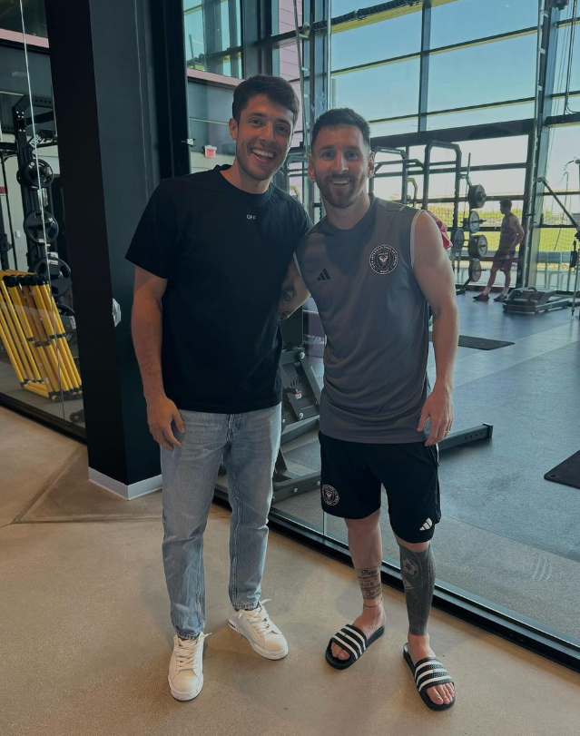
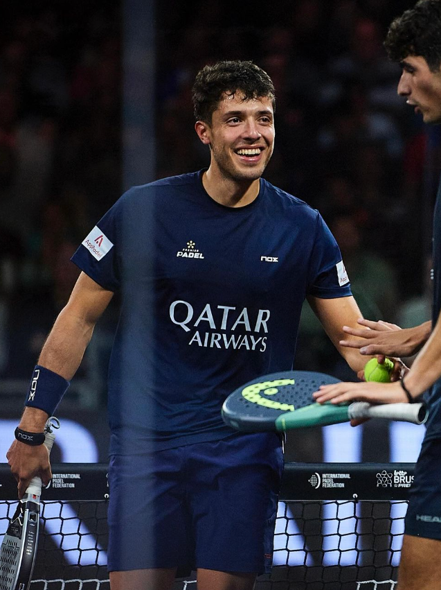
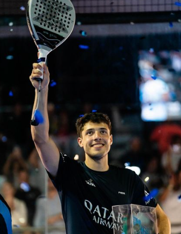
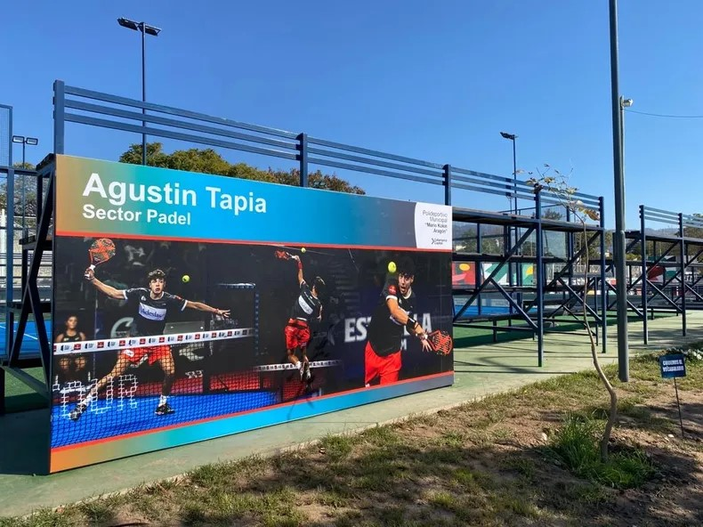

-Bienvenidos al sitio web de Agustin Tapia, el MOZART del padel mundial. Aquí podrán conocer
tanto la
historia de su carrera deportiva como las últimas novedades sobre la misma. Conozcan al genio de
Catamarca, su vida y lo que ha significado el padel en ella.
BIOGRAFIA
EL MOZART DE CATAMARCA
Agustín Tapia nació en San Fernando del Valle de Catamarca, el 24 de julio de 1999. Empieza a
jugar a una temprana edad llevándose una gran cantidad de premios de competiciones que se
realizaban en Argentina. Con 15 años decide separarse de su familia y amigos para cambiarse de
ciudad y mudarse a Rosario para así poder seguir entrenando de forma continua y profesional. Tan
solo dos años después logra quedar el número uno en una de las competiciones más importantes su
país, el circuito profesional de Argentina. Un tiempo después decide seguir creciendo en su
carrera profesional por lo que viaja a España para poder jugar en el World Padel Tour junto
Marcello Jardim y firma mi primer contrato profesional con NOX.
Juntos conseguirían permanecer en muy buenas posiciones, llegando a cuartos por primera vez. Sin
embargo enseguida cambiaría a su pareja, esta vez con Juan Martín Diaz, uno de los mejores
jugadores de todo el World Padel Tour que consiguió mantenerse en el número uno durante 13 años.
Sin embargo unos meses después sufre una lesión en la pierna que le impide jugar por cuatro
meses. Al volver, Fernando Belasteguin se convierte en su nueva pareja, aquí logra conseguir
junto a a su compañero el Madrid Master 2019, llevándose así su primer titulo oficial siendo de
los más jóvenes en lograr esto.
En 2021, Tapia es nombrado MVP "Most Valuable Player" en el Estrella Damm de las Rozas Open
2021. Otro titulo que se le entrego
fue el Trofeo Elias Estrella al jugador revelación del World Padel Tour ya que el jugador
consiguió en muy poco tiempo posicionarse como uno de los mejores.
A principios de 2021 anuncia que su nueva pareja seria Pablo Lima con el que lograría escalar
posiciones en el ranking de parejas del World Padel Tour. Juntos conseguirían títulos como el
Estrella Damm Las Rozas Open 2021 consiguiendo ganar a su antiguo compañero Fernando Belasteguin
y a Sanyo Gutierrez.
Esta no seria su única victoria ya que también conseguirían su última victoria en el Cervezas
Victoria Málaga Open 2021, ganando a dos de los mejores, Paquito Navarro y Martin Di Nenno. Tras
unos muy buenos resultados decide separarse de Lima. Su siguiente pareja seria Sanyo Gutiérrez,
con quien también consiguió muy buenos resultados en su año juntos, terminando pareja número 2
del circuito.
En 2023 decide unirse con Arturo Coello, otro talentoso jugador joven, convirtiendose así en
números 1 del mundo en tan solo medio año de torneos, ganando absolutamente todos los torneos
disputados en ese tiempo.
En la actualidad siguen liderando el ranking como la pareja numero 1 del mundo gracias a su
combinación, ya ha ganado más de 15 torneos y aspiran a terminar otro año en esta posicion.
Agustin es conocido en el mundo del pádel como "El Mozart de Catamarca" por su talento innato y
su
estilo de juego elegante y exquisito.
Documental de Agustin Tapia hecho por NOX
El documental que ralizó "NOX" marca lider en padel y también marca que acompañó a Agustin Tapia
en
su emocionante camino hacia el número 1, el mejor jugador de padel del mundo a sus 23 años tras
ganar el torneo de Vigo en una de las finales más apasionantes en la historia de este deporte.
NOVEDADES

SE CONOCEN LOS NUMERO 1
El mejor jugador de padel del mundo conoce al mejor jugador de futbol del mundo. Agustin Tapia
pudo conocer a su idolo e icono del futbol mundial Lionel Messi durante un torneo
disputado en miami, donde actualmente reside Lio, la experiencia según agus fue "inolvidable"

SUBCAMPEONES EN BRUSELAS
Agus y Arturo caen en la final por segunda vez este año tras ser derrotados por Chingotto-Galan
que dieron un espectaculo enorme para poder ganarles, este enfrentamiento sin dudas será un
clásico este año y nos regalará muchas alegrías!.

CAMPEONES EN PUERTO CABELLO
La formula Tapia-Coello logra una victoria increíble en el P2 de Puerto Cabello tras vencer por
2/6-6/3-6/3 a Chingotto-Galan, una nueva pareja que ya en su debut se enfrenta a los número 1
llegando a la final, prometen dar mucha pelea este año.
DESTACADOS
EL MAESTRO MAS JOVEN
El Tie Break final del Estrella Damm Menorca Master Final 2020 donde Agustin Tapia tras vencer
junto a Fernando Belasteguin, se convierte en
el jugador mas jóven de la historia en ganar un Master Final.
NUMERO 1 DEL PADEL MUNDIAL
La increíble final del torneo Estrella Damm Vigo Open 2023, catalogada como una de las mejores
finales de la historia de este deporte, que enfrenta a Alejando Galan y Juan Lebron, en ese
momento pareja 1 del
circuito, contra Agustin Tapia y Arturo Coello, donde conseguirian estos ultimos destronarlos y
consagrarse como la nueva pareja 1 del mundo.
DEBUT Y VICTORIA DE COELLO-TAPIA
Agustin Tapia y Arturo Coello entran a pista por primera vez como pareja y consiguen su primera
victoria en su debut.

CANCHA AGUSTIN TAPIA
La cancha de padel ubicada en Catamarca, en el polideportivo municipal 250 que lleva su nombre en
honor a la estrella catamarqueña Agustin Tapia, donde cualquiera tiene acceso a jugar en ella de
forma gratuita. El mozart ha visitado varias veces el lugar cuando vuelve a su ciudad natal a
fines de temporada, siempre expresando su gratitud y alegría con el gobierno de Catamarca por
tan lindo homenaje. Tambien es un espacio para que los catamarqueños fanaticos del padel y por
supuesto de Agus, se acerquen y puedan conocerlo.